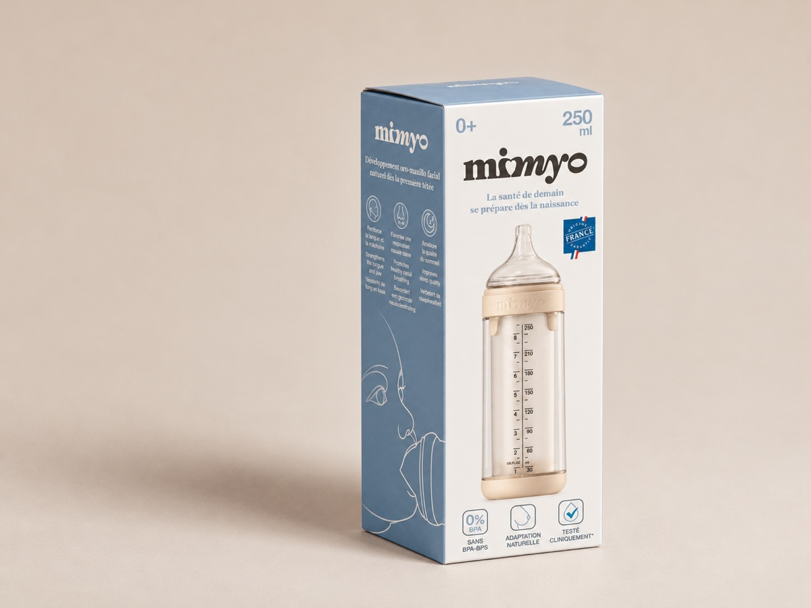
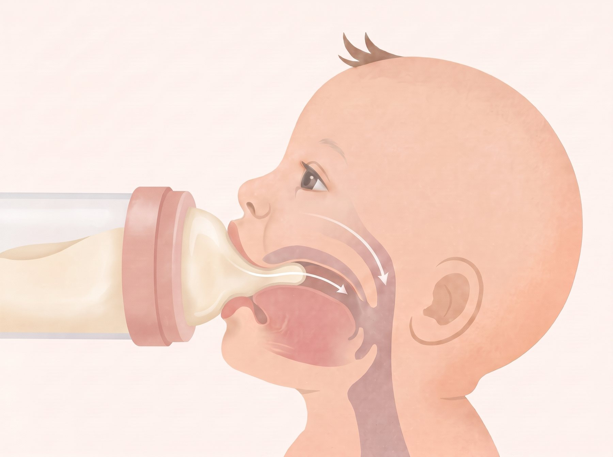
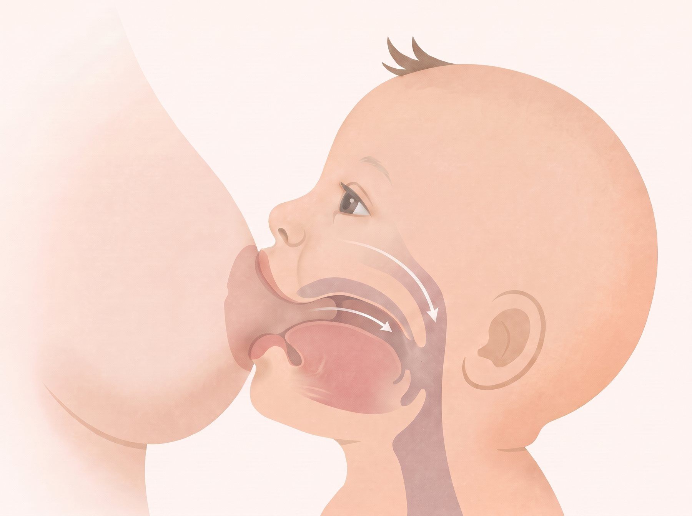
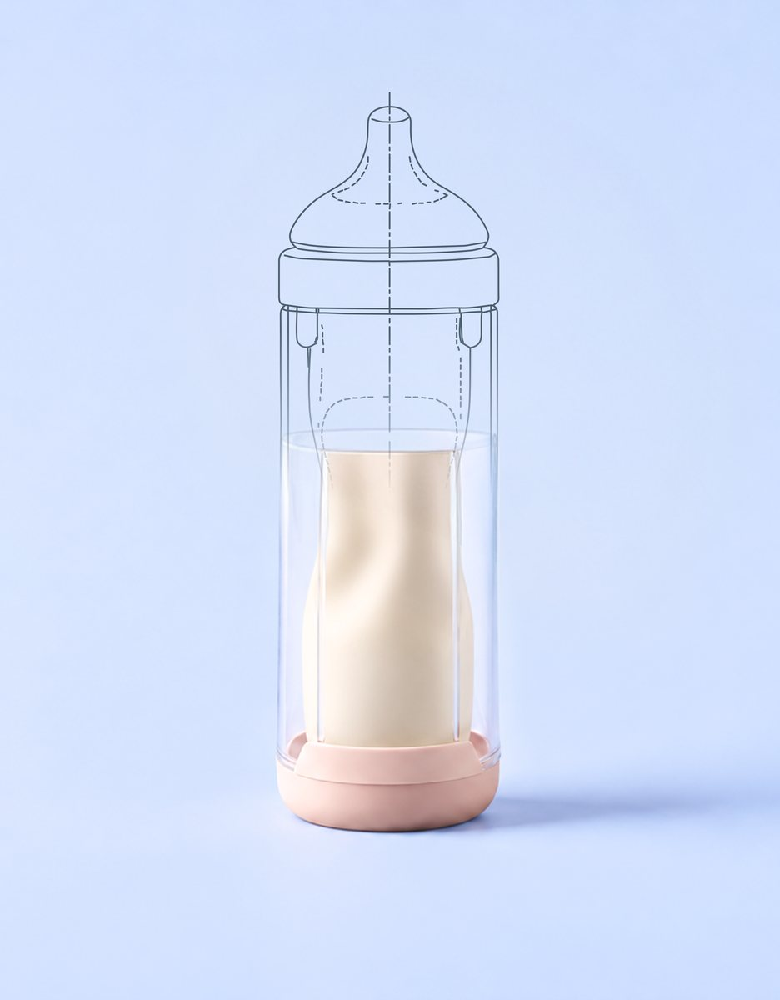
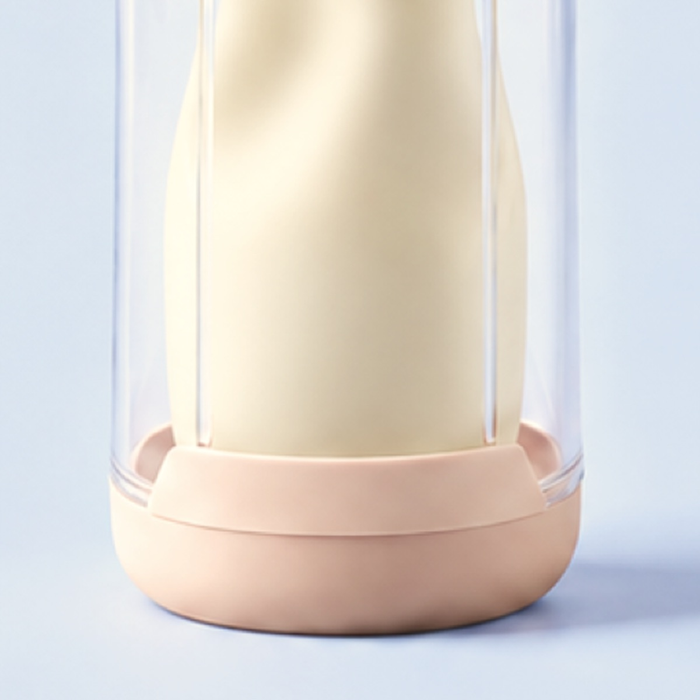

Photo to come
Dr Caroline De Ville
General practitioner · IBCLC lactation consultant
Specialised in early childhood, breastfeeding and restrictive oral ties. Founder of the training institute Au sein en douceur. Bio to confirm
Mimyo is designed to replicate key mechanics of breastfeeding (the baby creates the suction) to support oromaxillofacial development. It complements breastfeeding; it does not replace it.

For all babies, from birth to age 4, with expressed breast milk or formula. Here's what parents ask, and what you can tell them.
Mimyo complements breastfeeding; it doesn't replace it. For feeds with expressed milk, it's designed to replicate key mechanics of breastfeeding, so the baby keeps working for the milk.
Mimyo works with expressed breast milk or formula, so the feeding mechanics stay close to the breast, whatever the milk. The pouch stores expressed milk in the fridge, with a morning/evening marker so the baby gets milk expressed at the same time of day. The other parent can share feeds too.
Yes. Once the paediatrician starts semi-solid food, Mimyo can replace the beaker or cup. to confirm with the instructions for use
Milk doesn't flow by gravity: the baby has to create the suction, as at the breast. And there's no air intake, by design. source: LHP document of 6 Oct
The device, a milk pouch, a teat and a valve. Spare pouches, teats, valves and a dishwasher basket are sold separately.
Two forces remove milk at the breast: peristaltic tongue compression and intra-oral negative pressure. Mimyo's patented dual-valve system requires both. It admits no air and releases no milk by gravity.


At the breast With MimyoMedical device, CE marked under Regulation (EU) 2017/745. Materials: medical-grade silicone, BPA-free to confirm. Read the instructions for use and the labelling carefully before use.
Instructions for useStandard EN 14350 warnings; replace with the exact wording from Mimyo's instructions for use, expected end Nov / early Dec.
From the instructions for use, expected end Nov / early Dec.
Answer to be validated by Dr Caroline De Ville.
Persistent feeding difficulty, poor weight gain, suspected oral anomaly or swallowing disorder. to validate
Report any incident to LHP Healthcare (vigilance@…) and to the competent authority: ANSM, FAMHP/AFMPS or Direction de la santé.
Clinical investigation ISO 14350 and 13485 / EU MDR (the European Union Medical Device Regulation), in 3 phases, with 160 infants.
580 echographies with 160 infants at CHU Rabat (Morocco), under the direction of Professor Barkat.
Infants in the clinical investigation at CHU Ibn Sina, Rabat.
Echographies, under the direction of Prof. Barkat. Results are being finalised.
A valved bottle improved suck-swallow-nasal-breathe coordination. Cresi et al., 2024.
Schoolchildren studied for malocclusion prevalence in France. Borsa et al., 2023.

General practitioner · IBCLC lactation consultant
Specialised in early childhood, breastfeeding and restrictive oral ties. Founder of the training institute Au sein en douceur. Bio to confirm
Role
Bio from Henrik, Caroline or Jacques
Partner role
Short description
Everything above is what you need at the counter. Here's where to learn more about Mimyo and oro-maxillofacial function.
The questions you're most likely to hear at the counter, and the ones colleagues ask us.
Get in touchThe reference documents, and a direct line to the LHP team.
